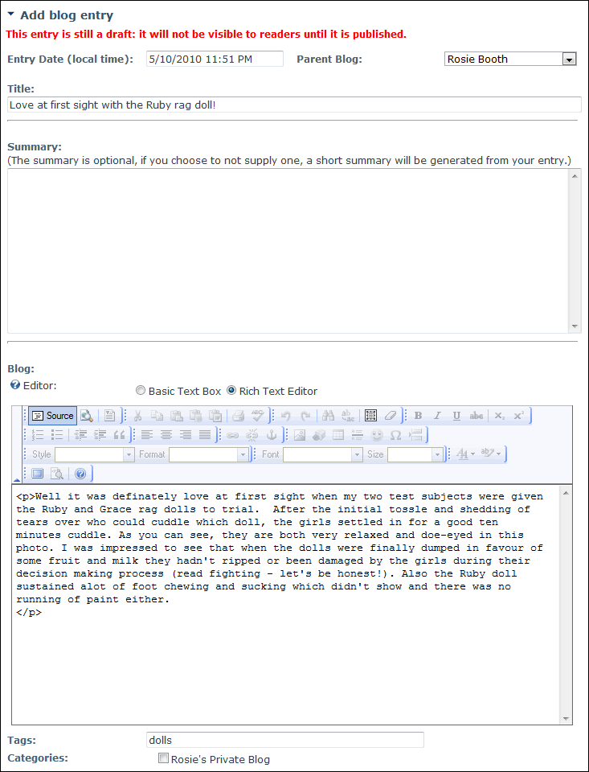
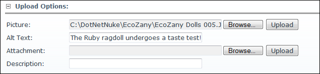
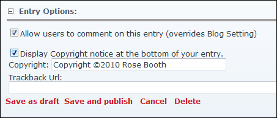

Adding an Advanced Blog Entry
How to add a blog entry including all optional settings using the Blog module.
- Click the Add Blog Entry link on the New_Blog module - OR - Click on blog name on the Blog_List module and then select Add Blog Entry from the View_Blog module actions menu. This opens the Add Blog Entry page.
- Optional. In the Entry Date (local time) text box, edit the date and time for this blog post if you want it to display at a date and time other than the current one when this entry is published.
- At Parent Blog, select which blog this entry will be added to. If Child Blogs are disabled or if you prefer using categories for blogs, use the Categories field below.
- In the Title text box, enter a title for this blog post.
- In the Summary Editor/text box, enter a summary of the blog entry. Note: This field may be optional and may allow HTML. See "Configuring Basic Settings for the Blog Module "
- In the Blog Editor, enter your blog post.
- Optional. In the Tags text box, enter one or more tags for this blog separated by a comma ( , ) E.g. dolls,toys. Note: This field includes an auto-complete option so when you begin entering a tag, if all or part of the word being entered already exists as a tag, buttons with matching tag names appear to the right of the text box enabling you to choose one of those existing tags.
- Optional. At Categories, beside each category related to this blog.

- Optional. Go to the Upload Options section.
- To add an image to this blog post:
- At Picture, click the Browse... button.
- In the Alt Text text box, enter the alternative text for this image.
- Click the Upload button. The image is now displayed in the Blog field Editor and is listed in the Linked Files section below.
- Repeat the above 3 steps to add additional images.
- To add an attachment to this blog post:
- At Attachment, click the Browse... button.
- In the Alt Text text box, enter the alternative text for this attachment.
- Click the Upload button. The attachment is now displayed in the Blog field Editor and is listed in the Linked Files section below.
- Repeat the above 3 steps to add additional attachments.

- Optional. Maximize the Linked Files section.
- Click the Delete File
 button beside any file that should not be included in this post. This displays the message "Are you really sure to delete the file?"
button beside any file that should not be included in this post. This displays the message "Are you really sure to delete the file?" - Repeat the above 2 steps to delete additional files.

- Optional. Go to the Entry Options section.
- At Allow users to comment on this entry (overrides Blog Setting), to enable authenticated users to add comments to this blog entry - OR - to use the Blog Settings for this blog.
- At Display Copyright notice at the bottom of your entry, select from these options:
- Mark
 the check box to display a copyright notice for this entry. If checked, this will display the default Copyright message "Copyright ©[Current Year] [Username/Display Name]" (E.g. Copyright 2010 Rose Booth) which you can choose to edit.
the check box to display a copyright notice for this entry. If checked, this will display the default Copyright message "Copyright ©[Current Year] [Username/Display Name]" (E.g. Copyright 2010 Rose Booth) which you can choose to edit. - Unmark
 the check box for no copyright notice.
the check box for no copyright notice.
- In the Trackback URL text box enter the trackback URL of another blog.

- Click the Save As Draft link to save this entry for later publication - OR - Click the Save And Publish link to publish this entry now. The entry is now displayed to you in the Most Recent Blog Entries module. It will be visible to others only if it is published and in a public blog.

Adding a Blog Entry